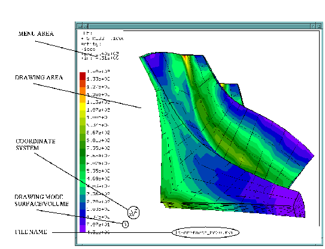

Mouse
The mouse is used to manipulate the view-point and scaling of the object inside the drawing area (figure 2). Rotation of the object is controlled by the left mouse button, zoom in and out by the middle mouse button and translation of the object is controlled by the right mouse button. Inside the menu area, the mouse triggers the main menu with the left button.
In addition the mouse controls the animation of nodal values. The animation will stop if the mouse pointer is not in the drawing area but will start again if the pointer enters the drawing area. This can be prevented by pressing the middle mouse button while the mouse pointer is in the menu area. Pressing the right button will release the next frame. A frozen animation can be released by pressing the middle button. The previous frame can be reloaded by pressing the middle mouse button twice and the right button once (while the mouse is in the menu area).
Figure 2:
structure of the main-window
 |